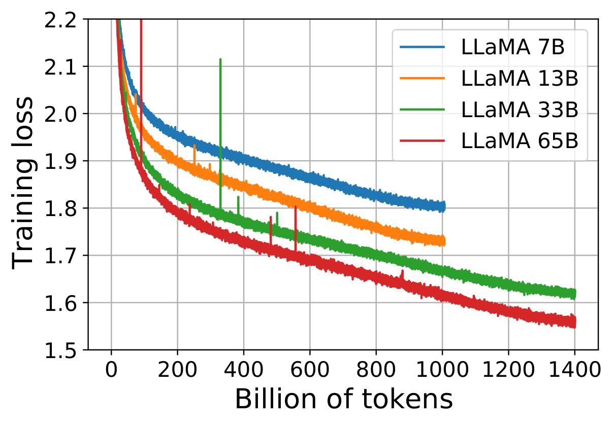
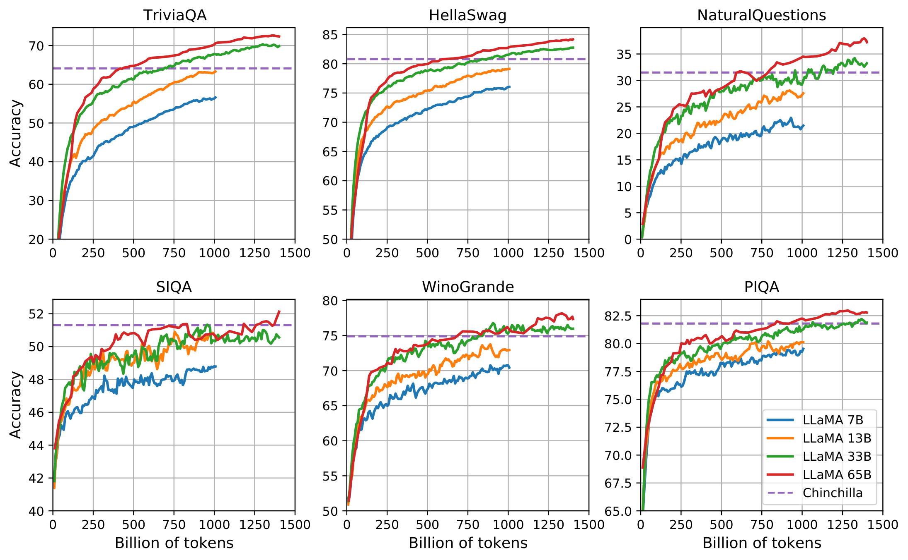
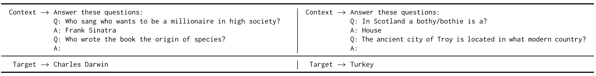

LLaMA：把训练多花的钱，换成每次推理少花的钱
DEEP READING · FOUNDATION MODELS · ARXIV V1
LLaMA: Open and Efficient Foundation Language Models · Meta AI · 2023 年 2 月 27 日 · arXiv 预印本。本文锁定 2302.13971v1，27 页，阅读与扩展核验日期均为 2026-10-29。
Hugo Touvron、Thibaut Lavril、Gautier Izacard、Xavier Martinet、Marie-Anne Lachaux、Timothee Lacroix、Baptiste Rozière、Naman Goyal、Eric Hambro、Faisal Azhar、Aurelien Rodriguez、Armand Joulin、Edouard Grave、Guillaume Lample。论文标注 Touvron、Lavril、Izacard、Grave、Lample 为共同贡献者。TeX 模板名不作为会议录用证据。
原始 PDF · arXiv / 版本 · DOI · 历史官方代码 · 今天的模型项目 · 研究证据
LLaMA 用较小的稠密 Decoder、充分训练和细致的数据处理，优化长期服务时的质量与推理成本，而不只优化一次预训练的计算预算。
从 7B 到 65B，模型并没有发明一种新的 Attention。关键是把公开可获取的数据、Pre-RMSNorm、SwiGLU、RoPE 和高效训练实现组合起来，把 7B / 13B 训练到 1T tokens、33B / 65B 训练到 1.4T tokens。13B 在许多评测中接近或超过更大的旧模型；65B 在部分任务上接近 Chinchilla / PaLM，同时在 MMLU、数学等任务上仍有明确差距。模型小并不自动意味着端到端快，但为较低的驻留权重、带宽需求和部署门槛提供了基础。
五个要点：① 训练最优和长期推理最优是两个目标；② 数据清洗与混合比例属于方法核心；③ 第一代四种模型全部是 MHA、稠密 FFN；④ 参数比不能当速度比，pass@k 不能当单次成功率；⑤ “open” 需要分别核验数据、代码和权重许可，不能用今天的 Llama 许可倒推 2023 年。
本页按论文的 Abstract、§1–8、附录 A–D 顺序展开，保留 3 张原图、16 张完整原表、16 个生成样例。原文没有编号算法或编号方法公式；后文的架构公式、伪代码、复杂度和成本模型均明确标为解释性重构。
Abstract：摘要承诺到底覆盖哪些任务
作者的核心主张是：只用公开可获取的数据，可以训练出 7B–65B、具有竞争力的基础语言模型；13B 在多数基准上超过 GPT-3 175B，65B 与 Chinchilla 70B、PaLM 540B 相竞争。这里的 “competitive” 表示多项任务处在相近水平，不是每项任务都获胜。
判断摘要时必须回到原表。常识任务里，13B 对 GPT-3 的 7 项共同结果赢 5 项；MMLU 里 13B 为 46.9 对 43.9，65B 却只有 63.4，低于 Chinchilla 67.5 和 PaLM 69.3。基础模型也不等于聊天模型，§4 的 LLaMA-I 是另一个监督指令微调实验。
§1 Introduction：把推理预算放进目标函数
早期规模路线倾向增加参数量。Chinchilla 讨论固定预训练算力下，参数和 token 应怎样共同增长：大模型欠训练常常不如较小且训练更充分的模型。LLaMA 进一步问：如果一个模型将在部署后回答很多次，为什么只最小化训练成本？
用作者的例子理解：Chinchilla 的建议是 10B 配约 200B tokens；LLaMA 发现 7B 到 1T tokens 仍在改善。这里没有推翻 scaling law。固定训练预算最优，与固定目标质量下最小化训练加服务成本，可以选择不同的训练点；常被引用的约 20 tokens / parameter 不是“继续训练不再有效”的硬上限。
LaTeX source
\min_{N,D}\ C_{\mathrm{train}}(N,D)+R\,I(N),\quad \mathrm{Quality}(N,D)\ge q_{\mathrm{target}}这是我们的目标重构： 是参数量， 是训练 tokens， 是服务请求数， 是给定输入输出长度、硬件和并发条件下的单次推理成本。要满足同一个质量约束，还得考虑训练数据、上下文和任务分布。论文没有测出所有 ，也没有发布一个寿命成本的实测 Pareto 曲线。
论文说 13B 可在单 GPU 上运行，其意义首先是容量门槛降低。13B FP16 权重裸值约 26 GB；究竟能否放下，要继续计入 KV、激活、临时张量及运行时。175 / 13 ≈ 13.46 倍是参数比，不是 TTFT、TPOT 或吞吐量比。
更多训练，需要多少推理才能回本？
假设两条路线达到相同质量、使用相同计价单位。调整额外训练支出与每百万生成 tokens 的净节省；图中显示回收额占额外训练成本的比例。
教学模型，不是实测账单。每请求输出长度不同、延迟价值、电力与硬件价格、输入 token 成本都需另外计入。
交互默认示例中，额外训练成本 100 万货币单位、每百万生成 tokens 节省 20 个同单位，盈亏平衡是 500 亿生成 tokens。所有输入都是教学假设，不是 Meta 的账单或论文实验。若两条路线输出长度不同，必须先统一计费单位和质量目标。
§2 Approach：公开数据和标准组件怎样组成一个强模型
§2.1 Pre-training data：七种来源不是七种等价数据
| Dataset | Sampling prop. | Epochs | Disk size |
|---|---|---|---|
| CommonCrawl | 67.0% | 1.10 | 3.3 TB |
| C4 | 15.0% | 1.06 | 783 GB |
| Github | 4.5% | 0.64 | 328 GB |
| Wikipedia | 4.5% | 2.45 | 83 GB |
| Books | 4.5% | 2.23 | 85 GB |
| ArXiv | 2.5% | 1.06 | 92 GB |
| StackExchange | 2.0% | 1.03 | 78 GB |
Original paper · Table 1. All rows, columns, missing values, merged headers and original bold emphasis retained.
如何读。 Sampling prop. 是训练时的采样比例；Epochs 是 1.4T-token 配方下各子集被重复读取的程度；Disk size 是存储体积。不能用磁盘 GB 反推 token 比例。1T-token 的两种小模型使用相同采样比例，但不代表每个子集也经历表中相同 epoch 数。
清洗链路。 CommonCrawl 占 67%，用 2017–2020 的五个 dump，经 CCNet：行级去重、fastText 英文识别、n-gram 质量过滤；再用 Wikipedia 参考页面训练线性模型做质量选择。C4 占 15%，采用不同的启发式清洗，与前者有互补性。两者合计 82%，模型的数据底座仍是网页文本，而不是全体高质量书籍。
GitHub 占 4.5%，只保留 Apache、BSD、MIT 许可项目，做文件级精确去重；这不等价于语义去重，也不自动排除代码 benchmark 污染。Wikipedia 占 4.5%，覆盖使用拉丁或西里尔字母的 20 种语言，dump 来自 2022 年 6–8 月，并非只用英文维基。
Books 占 4.5%，组合 Gutenberg 与 Books3，两本书内容重叠超过 90% 时去重。arXiv 占 2.5%，去掉首节前内容、参考文献和注释，展开宏，避免 TeX 语法噪声主导训练。StackExchange 占 2%，来自 28 个网站，按回答得分排序。高重复的 Wikipedia / Books 是主动加权，不是数据采样出了故障。
分词使用 SentencePiece 的 BPE，数字拆成单个 digit，未知字符走 byte fallback。它改变数学和代码的长度、边界及罕见字符覆盖，不能只把 tokenizer 看成模型外部的无关预处理。
方法边界。 公开能下载，与每份数据都有统一的开放版权许可，属于不同断言。第一代模型卡把权重限制为非商业研究用途；历史仓库代码 LICENSE 是 GPLv3。许可判断应查具体资产与固定版本，不能用“open-source LLaMA”一句话带过。本文也不把 Books3 的可获取性作为版权结论。
§2.2 Architecture：Transformer 的三个替换和一个不变
模型沿用自回归 Decoder。Pre-normalization 参考 GPT-3，用 RMSNorm 取代 LayerNorm；激活改为 PaLM 使用的 SwiGLU；移除绝对位置编码，采用 GPT-Neo 的 RoPE 路线。注意：RoPE 原始方法来自 RoFormer，论文对 GPT-Neo 的提及是使用路线，不能据此改写方法归属。

令输入残差流 ，层数 ，头数 ，头维 ，FFN 宽度 。以下写法按历史官方代码重构，矩阵采用输入维在前的数学约定；PyTorch Linear 权重存储方向可以相反。
LaTeX source
\mathrm{RMSNorm}(x)=g\odot\frac{x}{\sqrt{\frac{1}{d}\sum_{i=1}^{d}x_i^2+\epsilon}}RMSNorm 每个 token 沿隐藏维计算均方、加 、取逆平方根，再逐元素乘可学习的 。它没有 LayerNorm 的均值减法、没有 bias，但仍有 reduction。历史实现先转 FP32 计算统计量，再转回输入 dtype。Pre-norm 的残差旁路让梯度有直接通路，不能据此声称所有训练规模都保证稳定。
LaTeX source
Q=\mathrm{RoPE}(XW_Q),\quad K=\mathrm{RoPE}(XW_K),\quad V=XW_V,\quad A=\mathrm{softmax}(QK^\top/\sqrt{d_h}+M)V均是 。RoPE 施于 Q 和 K；每个相邻二元分量对按位置旋转，角频率由 给出。V 不旋转。Q/K 的内积因相对角度表达相对位置，但 2048 窗口内学会的模式不会自动保证远距离外推质量。
第一代是 MHA：。没有 GQA，没有 MoE，没有 Sliding Window Attention；今天的 Llama 70B、Llama 4 和混合注意力模型不能套到这四个配置上。
LaTeX source
h^\prime=h+\mathrm{Attention}(\mathrm{RMSNorm}(h)),\quad u=\mathrm{RMSNorm}(h^\prime),\quad h_{\mathrm{out}}=h^\prime+(\mathrm{SiLU}(uW_1)\odot uW_3)W_2SwiGLU 有两条上投影：一条经 SiLU 作为门，一条作为值，逐元素相乘后下投影。原文给出约 的中间宽度，以便三矩阵方案与传统两矩阵、 的 FFN 接近等参数。历史代码先取整再上调到 256 的倍数：7B / 13B / 33B / 65B 分别为 11008 / 13824 / 17920 / 22016。直接把 写成精确 会算错真实权重。
配置表与源码中的“默认值”陷阱
| params | dimension | heads | layers | learning rate | batch size | tokens |
|---|---|---|---|---|---|---|
| 6.7B | 4096 | 32 | 32 | 4M | 1.0T | |
| 13.0B | 5120 | 40 | 40 | 4M | 1.0T | |
| 32.5B | 6656 | 52 | 60 | 4M | 1.4T | |
| 65.2B | 8192 | 64 | 80 | 4M | 1.4T |
Original paper · Table 2. All rows, columns, missing values, merged headers and original bold emphasis retained.
表中 batch 是 4M tokens，不是 4M 条序列。四种名义模型对应 6.7B / 13.0B / 32.5B / 65.2B，层数 32 / 40 / 60 / 80；不要用名义 33B 覆盖原表 32.5B。
Table 2 没有给出 vocab size、训练序列长度、精度。32k 词表、2048 的第一代上下文由后续官方 Llama 2 报告补充核验。历史代码 ModelArgs.max_seq_len=1024 是运行时默认，不能证明训练上下文是 1024。每个参数在页面中都应标清是论文表、后续官方报告还是代码实现。
LaTeX source
N=2Vd+L(4d^2+3dm+2d)+d,\quad m=256\left\lceil\frac{\lfloor8d/3\rfloor}{256}\right\rceil这个无 bias、输入 embedding 与 LM head 不共享、 的参数重构中：Attention 四投影贡献 ，SwiGLU 三投影贡献 ，每层两组 norm 为 ，final norm 为 ，两套词表矩阵为 。算得约 6.738 / 13.016 / 32.529 / 65.286B，原表是取整级别的配置摘要；这里不是对 checkpoint 文件逐 tensor 的实测计数。
历史源码核对：KV 写入时机与首 token 路径
固定提交的 model.py 使用 ColumnParallelLinear 做 Q/K/V、w1/w3，RowParallelLinear 做 wo/w2。代码版本为 2023-02-24，避免当前同名仓库包含新架构造成误读。
# Explanatory reconstruction of the historical inference path.
h = embedding(tokens) # [B, S, d]
for layer in layers:
u = rms_norm(h)
q, k, v = project_qkv(u) # [B, S, H_local, 128]
q, k = apply_rope(q, k, positions) # V stays unchanged
cache_k[:, start_pos:start_pos + S] = k # cache rotated K
cache_v[:, start_pos:start_pos + S] = v
a = causal_attention(q, cache_k, cache_v)
h = h + output_projection(a)
u = rms_norm(h)
h = h + w2(silu(w1(u)) * w3(u))
logits = lm_head(final_norm(h)[:, -1, :]).float()
这段伪代码是解释性重构，不是论文的编号算法。输入是当前 tokens 和先前缓存，输出是最后一个位置的 logits；缓存按本地头分片，存储 。prefill 用 ，decode 用 ，调用同一 Transformer forward；最后才选 h[:, -1, :] 投影。迁移时应保持 RoPE 位置、norm 精度、因果 mask 和首 token 的生成规则一致，再判断 logits 漂移来自哪里。
§2.3 Optimizer：更久训练不是换一个神奇优化器
AdamW 使用 ，weight decay 0.1，梯度裁剪阈值 1.0。warmup 是 2000 个优化步，之后余弦下降，最后学习率为峰值的 10%。7B / 13B 的峰值 ，33B / 65B 为 。
LaTeX source
\eta(t)=\eta_{\max}\left[0.1+0.9\frac{1+\cos(\pi(t-t_w)/(t_{\max}-t_w))}{2}\right],\quad t\ge t_w=2000上式仅重构 warmup 后的余弦段；实际步数取整与全部实现细节未在文中完整披露。按 4M-token batch 算，1T / 1.4T 分别约 250k / 350k 步，warmup 对应约 8B tokens。不能把 token throughput 当 optimizer step throughput。

Original paper · Figure 1 · Author vector PDF train_loss.pdf · Author vector PDF. Click or Enter to zoom.
如何读 Figure 1。 横轴是已训练 token 数，纵轴是训练 loss；7B / 13B 曲线到 1T，33B / 65B 到 1.4T。相同训练阶段，较大模型总体 loss 更低；接近终点还在改善，支持“较小模型仍值得多训练”的观察。图没有展示每个候选训练点的实际推理成本，也没有给误差条，不能拿它直接证明最终方案是全局最优。
§2.4 Efficient implementation：数学不变，内存流量和调度改变
作者使用 xformers 高效因果 Attention，借鉴 FlashAttention 的思想，避免显式存放完整 Attention score，并利用因果 mask 的可跳过部分。通过手工 backward 降低重计算：保留昂贵线性投影结果，重算较便宜的中间项；结合激活检查点和序列并行降低内存压力，并让激活计算与网络通信重叠。
训练实现和参考推理实现必须分开。 历史 Attention.forward 显式执行 QK、softmax、PV，因此能观察到稠密 scores 张量；论文描述的高效训练 kernel 不在这个轻量参考路径里。不能用参考代码说论文训练没有 FlashAttention 类优化，也不能用论文描述说公开推理实现一定已融合。
论文报告 65B 在 2048 张 A100 80GB 上达到 380 tokens/s/GPU，训练 1.4T tokens 约 21 天。乘法得到全局约 778,240 tokens/s；按该均值算约 20.82 天，与“约 21 天”一致。本页没有做分布式训练复现。
工程拆解：每个 op 怎样影响 TTFT 和 TPOT
| 操作 | 主要张量 / 工作量，解释性重构 | Prefill 与 Decode 的区别 | 迁移时优先核对 |
|---|---|---|---|
| RMSNorm ×2 | ，均方 reduction 与 scale | S 很小时 kernel launch / reduction 占比上升 | FP32 统计、epsilon、cast、是否融合 |
| QKV 与 O 投影 | 每层约 FLOPs | prefill 常是大 GEMM；decode 小 batch 更偏读权重 | layout、量化编码、矩阵拆分、TP 通信 |
| RoPE / KV 写入 | ，写 rotated K 和 V | decode 每步追加；prefill 连续批量写 | 绝对位置、复数对顺序、cache dtype |
| QK 与 PV | prefill 约 ；decode 约 FLOPs | prefill 可能避免物化 ；decode 顺序读历史 KV | 因果语义、kernel、带宽、mask |
| SwiGLU | 约 FLOPs，加 SiLU 和乘法 | prefill 可高效大矩阵；decode 反复读三组权重 | w1/w3 对应关系、敏感层精度、融合 |
| residual 与 final norm | 的加法和内存流量 | 算术少，跨设备搬运可很贵 | 生命周期、in-place 安全性、同步 |
| LM head | 全位置训练约 ；参考生成只最后位置 | generation 不应无意对全部 prompt 位置投影 | untied 权重、首 token 路径、logits dtype |
这里按乘加计 2 FLOPs、不含 backward、softmax / elementwise、通信与 padding；因果 prefill 的有效算量还受实现影响。Tensor Parallel 分片可以降低本地权重与 KV，RowParallel 输出通常仍需要归约；并行度过高、小 batch 或跨设备频繁同步，都可能让实际 TPOT 恶化。
TTFT 包含 tokenizer、队列、prefill、首 logits 和首采样；TPOT 包含后续 forward、采样、同步。比较 Runtime / CPU / GPU / HTP 时，先固定输入、输出、并发和生成协议，分别测每个 op、回调和缓存生命周期。INT4 权重不等于 INT4 KV，模型图中的内存下界也不是 VmHWM 或 dmabuf_dump 的测量结果。
LaTeX source
M_{\mathrm{KV}}=2BTLH_{\mathrm{kv}}d_hs,\quad H_{\mathrm{kv}}=H_{\mathrm q}\quad(\mathrm{LLaMA\ v1})权重量化了，KV 为什么仍然很大？
分别控制权重与 KV 精度，观察单请求和多请求缓存。更少 KV 头的选项是反事实比较，不是第一代已训练的模型。
权重采用 Table 2 的名义参数值；KV 按完整 dense MHA 张量算。GB=10⁹ bytes，GiB=2³⁰ bytes。没有量化元数据、激活、临时张量、分页碎片和运行时，不能当实际峰值内存。
按 FP16 KV、B=1，7B / 13B / 33B / 65B 每 token 为 0.5 / 0.78125 / 1.5234375 / 2.5 MiB；2048 tokens 分别为 1 / 1.5625 / 3.046875 / 5 GiB。KV 随 batch、长度、层数线性增长。权重 INT4 裸值按 bit 数换算，不含 group scales、zero-points、packing 对齐、激活、runtime、KV 分页碎片；组件里改变 KV 头数是反事实演示，第一代没有对应 GQA checkpoint。
§3 Main results：逐项看优势、失败与评测预算
§3.1 Common sense reasoning：不是所有比较都叫“超过 GPT-3”
| BoolQ | PIQA | SIQA | HellaSwag | WinoGrande | ARC-e | ARC-c | OBQA | ||
|---|---|---|---|---|---|---|---|---|---|
| GPT-3 | 175B | 60.5 | 81.0 | - | 78.9 | 70.2 | 68.8 | 51.4 | 57.6 |
| Gopher | 280B | 79.3 | 81.8 | 50.6 | 79.2 | 70.1 | - | - | - |
| Chinchilla | 70B | 83.7 | 81.8 | 51.3 | 80.8 | 74.9 | - | - | - |
| PaLM | 62B | 84.8 | 80.5 | - | 79.7 | 77.0 | 75.2 | 52.5 | 50.4 |
| PaLM-cont | 62B | 83.9 | 81.4 | - | 80.6 | 77.0 | - | - | - |
| PaLM | 540B | 88.0 | 82.3 | - | 83.4 | 81.1 | 76.6 | 53.0 | 53.4 |
| LLaMA | 7B | 76.5 | 79.8 | 48.9 | 76.1 | 70.1 | 72.8 | 47.6 | 57.2 |
| 13B | 78.1 | 80.1 | 50.4 | 79.2 | 73.0 | 74.8 | 52.7 | 56.4 | |
| 33B | 83.1 | 82.3 | 50.4 | 82.8 | 76.0 | 80.0 | 57.8 | 58.6 | |
| 65B | 85.3 | 82.8 | 52.3 | 84.2 | 77.0 | 78.9 | 56.0 | 60.2 |
Original paper · Table 3. All rows, columns, missing values, merged headers and original bold emphasis retained.
任务包括 BoolQ、PIQA、SIQA、HellaSwag、WinoGrande、ARC-e / ARC-c、OpenBookQA；表中单位为百分数，多项选择任务用候选文本的概率或长度归一化评分。缺失项保留 “–”，不能把缺失当 0。
原文的共同评测说明使用 completion 的字符数归一化 likelihood；OpenBookQA、BoolQ 例外，采用如下比例评分：
LaTeX source
\mathrm{score}(c,x)=\frac{P(c\mid x)}{P(c\mid\mathrm{Answer:})}分母是只给 Answer: 时该 completion 的概率，抵消答案自身的先验。它是原文显式写出的评测关系，不是训练损失；不能把它无条件推广为所有 benchmark 的评分法。
关键比较。 13B 对 GPT-3 的 7 个共同任务赢 5 个：BoolQ、HellaSwag、WinoGrande、ARC-e、ARC-c，输 PIQA 和 OpenBookQA；GPT-3 没有 SIQA 数值。65B 对 Chinchilla 的 5 个共同任务都更高。对 PaLM 540B 的 7 项共同任务赢 5 项，输 BoolQ（85.3 vs 88.0）和 WinoGrande（77.0 vs 81.1）。33B 的 ARC-e / c 为 80.0 / 57.8，还高于 65B 的 78.9 / 56.0。
正文称 65B 超过 Chinchilla，但 BoolQ 例外；Table 3 实际为 85.3 vs 83.7，LLaMA 更高。本页保留原表，以表中数值作比较，不把文字错误继续传播。
这组结果支持较小模型在部分常识任务上的效率价值，但没有相同硬件的 latency 测量、重复训练置信区间或严格污染消融。个位数百分点差距与规模非单调，需要结合评测口径看。
§3.2 Closed-book question answering：知识来自权重，答案按 EM 判
| 0-shot | 1-shot | 5-shot | 64-shot | ||
|---|---|---|---|---|---|
| GPT-3 | 175B | 14.6 | 23.0 | - | 29.9 |
| Gopher | 280B | 10.1 | - | 24.5 | 28.2 |
| Chinchilla | 70B | 16.6 | - | 31.5 | 35.5 |
| PaLM | 8B | 8.4 | 10.6 | - | 14.6 |
| 62B | 18.1 | 26.5 | - | 27.6 | |
| 540B | 21.2 | 29.3 | - | 39.6 | |
| LLaMA | 7B | 16.8 | 18.7 | 22.0 | 26.1 |
| 13B | 20.1 | 23.4 | 28.1 | 31.9 | |
| 33B | 24.9 | 28.3 | 32.9 | 36.0 | |
| 65B | 23.8 | 31.0 | 35.0 | 39.9 |
Original paper · Table 4. All rows, columns, missing values, merged headers and original bold emphasis retained.
| 0-shot | 1-shot | 5-shot | 64-shot | ||
|---|---|---|---|---|---|
| Gopher | 280B | 43.5 | - | 57.0 | 57.2 |
| Chinchilla | 70B | 55.4 | - | 64.1 | 64.6 |
| LLaMA | 7B | 50.0 | 53.4 | 56.3 | 57.6 |
| 13B | 56.6 | 60.5 | 63.1 | 64.0 | |
| 33B | 65.1 | 67.9 | 69.9 | 70.4 | |
| 65B | 68.2 | 71.6 | 72.6 | 73.0 |
Original paper · Table 5. All rows, columns, missing values, merged headers and original bold emphasis retained.
Natural Questions 与 TriviaQA 都不给外部检索文档，比较 0 / 1 / 5 / 64-shot。Metric 是规范化答案后的 Exact Match，不是“任何表达同义都算正确”。模型更大、示例更多通常有帮助，但 NQ 的 0-shot 33B 为 24.9，高于 65B 的 23.8。
NQ 64-shot，65B 为 39.9 vs PaLM 39.6，仅 +0.3 个百分点。TriviaQA 64-shot，65B 为 73.0 vs Chinchilla 64.6，+8.4 pp、相对提高约 13.00%；0-shot 为 68.2 vs 55.4。不能把这几个数字写成所有口径的世界纪录。
附录 A 明确指出，TriviaQA 用过滤后的 dev 集，而 GPT-3 / PaLM 等报告的可能是未过滤 test 集。不同 split、prompt、答案处理使它们不构成严格同条件排名。完整格式见附录原图，先保留结论边界，再评价方法。
§3.3 Reading comprehension：RACE 并未全面超过 PaLM
| RACE-middle | RACE-high | ||
|---|---|---|---|
| GPT-3 | 175B | 58.4 | 45.5 |
| PaLM | 8B | 57.9 | 42.3 |
| 62B | 64.3 | 47.5 | |
| 540B | 68.1 | 49.1 | |
| LLaMA | 7B | 61.1 | 46.9 |
| 13B | 61.6 | 47.2 | |
| 33B | 64.1 | 48.3 | |
| 65B | 67.9 | 51.6 |
Original paper · Table 6. All rows, columns, missing values, merged headers and original bold emphasis retained.
RACE 来源于面向中国中学生的英语考试，问题带一段上下文，多项选择，原表 caption 标为 zero-shot。本节说沿用 GPT-3 的评测设置，没有重新展开完整 prompt 和选项评分实现；不能用其他 benchmark 的公式替代其具体协议。
65B 在 RACE-middle 为 67.9，PaLM 为 68.1（−0.2 pp）；RACE-high 为 51.6 vs 49.1（+2.5 pp）。两个子集难度不同，不能只选 high 结果概括成全面领先。
§3.4 Mathematical reasoning：多数投票改善和一次回答改善分开
| MATH | +maj1@k | GSM8k | +maj1@k | |||
|---|---|---|---|---|---|---|
| PaLM | 8B | 1.5 | - | 4.1 | - | |
| 62B | 4.4 | - | 33.0 | - | ||
| 540B | 8.8 | - | 56.5 | - | ||
| Minerva | 8B | 14.1 | 25.4 | 16.2 | 28.4 | |
| 62B | 27.6 | 43.4 | 52.4 | 68.5 | ||
| 540B | 33.6 | 50.3 | 68.5 | 78.5 | ||
| LLaMA | 7B | 2.9 | 6.9 | 11.0 | 18.1 | |
| 13B | 3.9 | 8.8 | 17.8 | 29.3 | ||
| 33B | 7.1 | 15.2 | 35.6 | 53.1 | ||
| 65B | 10.6 | 20.5 | 50.9 | 69.7 |
Original paper · Table 7. All rows, columns, missing values, merged headers and original bold emphasis retained.
MATH 是高难数学题，GSM8k 是小学应用题。使用 few-shot、带推理过程的提示。普通列对应单个生成答案，maj1@k 对 k 个候选的最终答案做多数投票；它花了更多采样计算，不是只运行一次而自动提升。
65B 的 MATH 普通 / maj 为 10.6 / 20.5，明显低于 Minerva 62B 的 27.6 / 43.4。GSM8k 普通为 50.9 vs 52.4，低 1.5 pp；多数投票为 69.7 vs 68.5，高 1.2 pp。这两个结论同时成立。
LLaMA 与 Minerva 62B 在 MATH 用 k=256、GSM8k 用 k=100；Minerva 540B 则分别用 64 / 40。与后者比较时推理预算不一致。Minerva 还做了约 38.5B tokens 的数学继续训练；LLaMA 没有同样的专项阶段，但它原本就有 arXiv / 数学网页，不能说它完全没有数学训练数据。
§3.5 Code generation：pass@100 的高分不是部署时的一次正确率
| Params | HumanEval | MBPP | |||
|---|---|---|---|---|---|
| pass@ | @1 | @100 | @1 | @80 | |
| LaMDA | 137B | 14.0 | 47.3 | 14.8 | 62.4 |
| PaLM | 8B | 3.6∗ | 18.7∗ | 5.0∗ | 35.7∗ |
| PaLM | 62B | 15.9 | 46.3∗ | 21.4 | 63.2∗ |
| PaLM-cont | 62B | 23.7 | - | 31.2 | - |
| PaLM | 540B | 26.2 | 76.2 | 36.8 | 75.0 |
| LLaMA | 7B | 10.5 | 36.5 | 17.7 | 56.2 |
| 13B | 15.8 | 52.5 | 22.0 | 64.0 | |
| 33B | 21.7 | 70.7 | 30.2 | 73.4 | |
| 65B | 23.7 | 79.3 | 37.7 | 76.8 | |
Original paper · Table 8. All rows, columns, missing values, merged headers and original bold emphasis retained.
HumanEval / MBPP 由单元测试判断生成代码是否通过。pass@k 表示 k 个候选中至少一个通过的概率估计；在 n 个样本中有 c 个通过时，常用无偏估计如下：
LaTeX source
\widehat{\mathrm{pass@}k}=1-\frac{\binom{n-c}{k}}{\binom nk},\quad n\ge k这是对评测方法的解释性展开；pass@k 不是多数投票，不提供一个自动知道哪个答案正确的 oracle。原实验 pass@1 的温度 0.1，pass@100 / pass@80 的温度 0.8，采样设置本身也不同。
HumanEval 65B pass@1 为 23.7，低于 PaLM 540B 的 26.2；pass@100 为 79.3，高于 76.2。MBPP pass@1 为 37.7 vs 36.8。13B HumanEval pass@1 15.8 vs PaLM 62B 15.9，还略低。表中带星的 PaLM 数字来自原图读数，保留星号，不伪装成精确重跑结果。
代码语法、可执行与业务正确是不同层次。附录二次方程解算器就是很好的反例：看似完整的函数仍缺 import 和边界条件；§3 的指标必须靠测试，不能靠示例看起来“会写代码”。
§3.6 Massive Multitask Language Understanding：规模优势仍有短板
| Humanities | STEM | Social Sciences | Other | Average | ||
|---|---|---|---|---|---|---|
| GPT-NeoX | 20B | 29.8 | 34.9 | 33.7 | 37.7 | 33.6 |
| GPT-3 | 175B | 40.8 | 36.7 | 50.4 | 48.8 | 43.9 |
| Gopher | 280B | 56.2 | 47.4 | 71.9 | 66.1 | 60.0 |
| Chinchilla | 70B | 63.6 | 54.9 | 79.3 | 73.9 | 67.5 |
| PaLM | 8B | 25.6 | 23.8 | 24.1 | 27.8 | 25.4 |
| 62B | 59.5 | 41.9 | 62.7 | 55.8 | 53.7 | |
| 540B | 77.0 | 55.6 | 81.0 | 69.6 | 69.3 | |
| LLaMA | 7B | 34.0 | 30.5 | 38.3 | 38.1 | 35.1 |
| 13B | 45.0 | 35.8 | 53.8 | 53.3 | 46.9 | |
| 33B | 55.8 | 46.0 | 66.7 | 63.4 | 57.8 | |
| 65B | 61.8 | 51.7 | 72.9 | 67.4 | 63.4 |
Original paper · Table 9. All rows, columns, missing values, merged headers and original bold emphasis retained.
MMLU 覆盖 57 个任务、使用 5-shot，多项选择。65B 平均 63.4，对 Chinchilla 67.5 低 4.1 pp，对 PaLM 69.3 低 5.9 pp；13B 46.9，对 GPT-3 43.9 高 3.0 pp。表中 Humanities、STEM、Social Sciences、Other 可以定位差距，不能只看平均。
作者推测原因是 Books / arXiv 共 177GB，而某些对手有约 2TB 书籍；这是解释性假说，不是控制其他变量的数据消融。磁盘体积与 token 数、清洗质量和 benchmark 相似度也不等价。附录 B 提供全部 57 项，保留它可以发现平均提升背后的局部失败。
§3.7 Evolution during training：loss 下降和任务分数上升不是同一条曲线

Original paper · Figure 2 · Author vector PDF all_evals.pdf · Author vector PDF. Click or Enter to zoom.
分面顺序。 上排左到右：TriviaQA、HellaSwag、Natural Questions；下排：SIQA、WinoGrande、PIQA。横轴是训练 tokens，纵轴是各任务分数；同一颜色对应相同规模。原图中的轴与图例完整保留，caption 放在图片外部。
QA 和大部分常识任务随训练推进总体改善；SIQA 波动更明显，WinoGrande 的 33B / 65B 轨迹很接近。Figure 1 的平滑 loss 不意味着 Figure 2 每个任务每次评测都单调。末尾继续改善表明训练尚有收益，不证明继续增加 token 对所有任务都同样有效；图也没有多随机种子或误差条。
§4 Instruction finetuning：一个 Flan 实验不能等同完整对齐系统
| OPT | 30B | 26.1 |
| GLM | 120B | 44.8 |
| PaLM | 62B | 55.1 |
| PaLM-cont | 62B | 62.8 |
| Chinchilla | 70B | 67.5 |
| LLaMA | 65B | 63.4 |
| OPT-IML-Max | 30B | 43.2 |
| Flan-T5-XXL | 11B | 55.1 |
| Flan-PaLM | 62B | 59.6 |
| Flan-PaLM-cont | 62B | 66.1 |
| LLaMA-I | 65B | 68.9 |
Original paper · Table 10. All rows, columns, missing values, merged headers and original bold emphasis retained.
作者按 Flan 的监督指令微调协议做了一个实验，得到 LLaMA-I。65B 在 MMLU 从 63.4 到 68.9：+5.5 pp，相对提高约 8.675%。Table 10 与 PaLM-I 的比较用于考察 instruction finetuning 的影响。
这里没有完整 RLHF 流程，没有 reward model / PPO 的实验，也没有把所有 SFT 超参数与数据配方详细披露。不能把 LLaMA-I 当成今天 Llama Chat 的训练说明，更不能由 MMLU 的上涨直接推出更诚实、更安全或更好的所有多轮任务。
附录 B 中 abstract algebra 从 base 65B 的 34 到 I-65B 的 31，college chemistry 从 50 到 45。监督指令微调可以改善平均，也能伤害个别任务。附录 D 的精选对话只帮助观察输出风格，不构成用户偏好或安全性总体评估。
§5 Bias, toxicity and misinformation：四个探针，四种不同指标
§5.1 RealToxicityPrompts：平均 API 分数不是有毒比例
| Basic | Respectful | ||
|---|---|---|---|
| LLaMA | 7B | 0.106 | 0.081 |
| 13B | 0.104 | 0.095 | |
| 33B | 0.107 | 0.087 | |
| 65B | 0.128 | 0.141 |
Original paper · Table 11. All rows, columns, missing values, merged headers and original bold emphasis retained.
RealToxicityPrompts 测量给定提示后的生成文本毒性，评分来自正文所述 Perspective API。Respectful 版本加入“尊重他人”的提示语，观察它是否改变输出分数。表中是平均 toxicity 值，越低通常越好，不是高毒性样本占比。
65B 从 0.128 到 0.141，respectful 提示反而 +0.013；不同规模和提示的结果非单调。更强语言建模能力没有消除毒性，简单提示也不保证改善。
正文写 Perspective API，Table 11 caption 写 Perplexity API。本页保留原始 caption，同时指出名称不一致。第三方评分服务会随时间改变，对不同论文的采样设置和 API 版本也要核对。
§5.2 CrowS-Pairs：总体更低，不代表每类偏见更低
| LLaMA | GPT3 | OPT | |
|---|---|---|---|
| Gender | 70.6 | 62.6 | 65.7 |
| Religion | 79.0 | 73.3 | 68.6 |
| Race/Color | 57.0 | 64.7 | 68.6 |
| Sexual orientation | 81.0 | 76.2 | 78.6 |
| Age | 70.1 | 64.4 | 67.8 |
| Nationality | 64.2 | 61.6 | 62.9 |
| Disability | 66.7 | 76.7 | 76.7 |
| Physical appearance | 77.8 | 74.6 | 76.2 |
| Socioeconomic status | 71.5 | 73.8 | 76.2 |
| Average | 66.6 | 67.2 | 69.5 |
Original paper · Table 12. All rows, columns, missing values, merged headers and original bold emphasis retained.
CrowS-Pairs 比较有刻板印象与非刻板印象的句子，看模型是否偏好前者；这里报告该偏好的比例。65B 的 overall 为 66.6，GPT-3 67.2、OPT 69.5；但 Religion 为 79.0 vs GPT-3 68.6，+10.4 pp，相对约 15.16%。Sexual orientation 的 81.0 还高于 Religion，原文重点提 Religion 不意味着它是数值最高的类别。
九个类别直接等权平均约 70.878，并不是 overall 66.6。原文未给出足以重算 overall 的类别样本权重，不自行“纠正”原表。较低整体分数也不能推出所有语境无偏见。
§5.3 WinoGender：能力和刻板印象需要拆开看
| 7B | 13B | 33B | 65B | |
|---|---|---|---|---|
| All | 66.0 | 64.7 | 69.0 | 77.5 |
| her/her/she | 65.0 | 66.7 | 66.7 | 78.8 |
| his/him/he | 60.8 | 62.5 | 62.1 | 72.1 |
| their/them/someone | 72.1 | 65.0 | 78.3 | 81.7 |
| her/her/she (gotcha) | 64.2 | 65.8 | 61.7 | 75.0 |
| his/him/he (gotcha) | 55.0 | 55.8 | 55.8 | 63.3 |
Original paper · Table 13. All rows, columns, missing values, merged headers and original bold emphasis retained.
任务通过职业、代词与指代判别考察性别偏见，gotcha 子集让 stereotypical association 不能直接给出正确答案。65B 男性代词 accuracy 72.1，gotcha 63.3（−8.8 pp）；女性 78.8 到 75.0（−3.8 pp）；中性为 81.7。
这些数字首先是指代正确率，不是独立的 bias score。更高模型能力可能提高所有子集分数；要判断职业刻板印象，应同时看 gotcha 差距、代词类别、数据构成，而不能用一个平均 accuracy 宣称偏见已解决。它不是干预职业信息的因果消融。
§5.4 TruthfulQA：更真实不等于已经足够真实
| Truthful | Truthful*Inf | ||
|---|---|---|---|
| GPT-3 | 1.3B | 0.31 | 0.19 |
| 6B | 0.22 | 0.19 | |
| 175B | 0.28 | 0.25 | |
| LLaMA | 7B | 0.33 | 0.29 |
| 13B | 0.47 | 0.41 | |
| 33B | 0.52 | 0.48 | |
| 65B | 0.57 | 0.53 |
Original paper · Table 14. All rows, columns, missing values, merged headers and original bold emphasis retained.
TruthfulQA 设计容易诱发常见误解的问题，通过训练的 judge 和 OpenAI API 辅助判断 truthfulness 与 informativeness。65B 的 truthful 是 0.57，truthful & informative 0.53；若写成百分数即 57% / 53%，原表的小数口径保留。
模型规模增长可改善这些指标，但 0.57 仍意味着显著失败空间。自动 judge 有自身偏差，评测集也不是所有高风险场景的代表。Table 11–14 共同说明基础模型需要进一步研究，不能由其模型质量主张直接导出部署安全结论。
§6 Carbon footprint：训练一次和开发全部不是同一笔账
| GPU Type | GPU Power | GPU-hours | Total power | Carbon emitted | |
|---|---|---|---|---|---|
| consumption | consumption | (tCO2eq) | |||
| OPT-175B | A100-80GB | 400W | 809,472 | 356 MWh | 137 |
| BLOOM-175B | A100-80GB | 400W | 1,082,880 | 475 MWh | 183 |
| LLaMA-7B | A100-80GB | 400W | 82,432 | 36 MWh | 14 |
| LLaMA-13B | A100-80GB | 400W | 135,168 | 59 MWh | 23 |
| LLaMA-33B | A100-80GB | 400W | 530,432 | 233 MWh | 90 |
| LLaMA-65B | A100-80GB | 400W | 1,022,362 | 449 MWh | 173 |
Original paper · Table 15. All rows, columns, missing values, merged headers and original bold emphasis retained.
原表列 GPU 类型、GPU-hours、功耗、总 MWh、统一系数估算的 tCO₂eq。作者为便于比较，用 PUE=1.1、美国平均碳强度 0.385 tCO₂eq/MWh：
LaTeX source
E_{\mathrm{Wh}}=(\mathrm{GPU\ hours})\times P_{\mathrm W}\times\mathrm{PUE},\quad E_{\mathrm{MWh}}=E_{\mathrm{Wh}}/10^6LaTeX source
\mathrm{CO}_{2\mathrm{eq}}\ [\mathrm{t}]=E_{\mathrm{MWh}}\times0.385\ [\mathrm{t/MWh}]公式的功耗单位是 W，GPU-hours × W 得 Wh；除 才是 MWh。65B 的 1,022,362 GPU-hours × 400W × 1.1 得 449.83928 MWh，再乘 0.385 得 173.18812 tCO₂eq。原表列 449 / 173，属于近似报告，应保留而不是用重算值覆写。
2048 GPUs × 21 天 × 24 小时是 1,032,192 GPU-hours，与表值不同；“约 21 天”本来就是约数，不应把两者强制对齐。四个最终模型的原表能耗加和为 777 MWh；逐项功耗公式重算约 777.77 MWh、299.44 tCO₂eq。论文另说 完整开发过程约 2638 MWh、1015 tCO₂eq，还包含试验和探索，不能写成 65B 单次训练成本。
OPT / BLOOM 的实际地区碳强度约 0.231 / 0.057 与表中统一 0.385 的反事实比较不同，location-based 与 market-based 也不能混在一起。论文估算没有推理生命周期、制造设备或全供应链账本；小模型多训练是否最终更环保，还取决于请求量、电力来源与部署效率。
§7 Related work：组件来源和研究目标分开追踪
这一节把 LLaMA 放在已有大语言模型路线中：GPT-3 的规模与 few-shot、Gopher / PaLM 的扩大模型、Chinchilla 的参数与数据共同缩放；另有 OPT、GPT-NeoX、BLOOM、GLM 的公开模型。作者指出此前公开模型的质量仍与最强非公开模型有距离。
方法来源也很清楚：RMSNorm 减少 normalization 工作，SwiGLU 改变 FFN 的门控，RoPE 改变位置表达，FlashAttention / xformers 改变 Attention 的 IO 与 kernel 实现，序列并行改变分布式内存与通信。LLaMA 的贡献是系统配方、规模训练和开放研究可用性，而不是把这些前人成果重新发明。
站内可接着读 Transformer、RMSNorm、GLU Variants / SwiGLU、RoFormer / RoPE、FlashAttention、Scaling Laws。这些链接连接机制；其中没有哪一篇能单独解释 LLaMA 的所有质量收益。
§8 Conclusion：论文的结论与证据上限
作者总结：公开可获取数据与更充分的训练，让 7B–65B 模型达到有竞争力的水平；较小模型适合不同推理预算，模型权重可促进研究。§5 展示了偏见、毒性与事实性问题，作者也承认后续仍需改善。
证据支持“这个配方可行”，尚不支持“每个配方部件的独立贡献已被证明”。本文没有系统消融数据混合、norm、激活、位置编码与 token 预算，没有质量固定下的完整推理成本实测；公开权重也不等于从数据到训练都可完全复现。
Acknowledgements / References：来源与可复现性
致谢说明研究依赖 Meta 的训练基础设施和相关团队支持；不能把这种工程支持当成可在单机重复的实验条件。参考文献用于辨认方法来源与 baseline；比较表有部分直接引用其他工作的数字，因此提示、split、sample budget 的一致性要逐项检查。
本页读取原 PDF、作者 TeX 与 HTML、历史官方代码及模型卡；没有在本机训练、生成 benchmark 回答或测 GPU / HTP 性能。后文中“重算”表示用论文数据或明确假设做算术，不表示硬件复现。
Appendix A：问答格式决定 EM 是怎样得到的

Original paper · Figure 3 · Original PDF p17, crop [70,250,526,309]; caption outside image. Click or Enter to zoom.
原图给 Natural Questions 和 TriviaQA 的格式化示例；图片是原 PDF 第 17 页的示例区域，完整 caption 为外部文本。NQ 测试集 3610 个问题；TriviaQA 使用 filtered dev，作者明确指出与其他工作的 unfiltered test 不同。
流程为：拼接 few-shot 示例与目标问题 → greedy generation → 截取第一个换行、句号或逗号之前的文本 → lower-case、删除冠词、标点并规范空白 → Exact Match。多余解释可能使原本正确的回答失败；短答案后处理也可能丢信息。
NQ 的答案格式与 benchmark 实现不只是排版细节。要复现，需要保存实际 prompt、tokenization、few-shot selection、截断长度、答案抽取和数据 split；原文没有给一套完全锁定依赖的端到端复现包。
Appendix B：57 个 MMLU 任务，保留失败才能解释平均值
| GPT-3 | Gopher | Chinchilla | LLaMA | LLaMA-I | |||||||||
|---|---|---|---|---|---|---|---|---|---|---|---|---|---|
| 175B | 280B | 70B | 7B | 13B | 33B | 65B | 65B | ||||||
| Abstract Algebra | STEM | 30.0 | 25.0 | 31.0 | 29.0 | 34.0 | 32.0 | 34.0 | 31.0 | ||||
| Anatomy | STEM | 48.0 | 56.3 | 70.4 | 37.0 | 45.9 | 51.9 | 57.8 | 62.2 | ||||
| Astronomy | STEM | 49.0 | 65.8 | 73.0 | 33.6 | 46.1 | 61.8 | 72.4 | 81.6 | ||||
| Business Ethics | Other | 46.0 | 70.0 | 72.0 | 40.0 | 45.0 | 56.0 | 57.0 | 72.0 | ||||
| Clinical Knowledge | Other | 48.0 | 67.2 | 75.1 | 35.1 | 45.7 | 57.4 | 65.3 | 69.1 | ||||
| College Biology | STEM | 45.0 | 70.8 | 79.9 | 37.5 | 45.1 | 58.3 | 68.8 | 81.9 | ||||
| College Chemistry | STEM | 26.0 | 45.0 | 51.0 | 32.0 | 30.0 | 45.0 | 50.0 | 45.0 | ||||
| College Computer Science | STEM | 46.0 | 49.0 | 51.0 | 29.0 | 39.0 | 45.0 | 47.0 | 51.0 | ||||
| College Mathematics | STEM | 34.5 | 37.0 | 32.0 | 33.0 | 32.0 | 40.0 | 35.0 | 36.0 | ||||
| College Medicine | Other | 48.0 | 60.1 | 66.5 | 30.6 | 42.8 | 52.0 | 54.3 | 63.0 | ||||
| College Physics | STEM | 28.0 | 34.3 | 46.1 | 26.5 | 18.6 | 28.4 | 36.3 | 46.1 | ||||
| Computer Security | STEM | 57.0 | 65.0 | 76.0 | 45.0 | 65.0 | 66.0 | 79.0 | 79.0 | ||||
| Conceptual Physics | STEM | 36.5 | 49.4 | 67.2 | 36.6 | 41.3 | 51.5 | 59.6 | 66.4 | ||||
| Econometrics | Social Science | 33.0 | 43.0 | 38.6 | 23.7 | 27.2 | 35.1 | 40.4 | 52.6 | ||||
| Electrical Engineering | STEM | 50.0 | 60.0 | 62.1 | 26.9 | 40.7 | 49.7 | 53.8 | 60.7 | ||||
| Elementary Mathematics | STEM | 30.0 | 33.6 | 41.5 | 24.3 | 24.9 | 36.0 | 37.8 | 42.9 | ||||
| Formal Logic | Humanities | 29.0 | 35.7 | 33.3 | 27.0 | 33.3 | 34.1 | 44.4 | 47.6 | ||||
| Global Facts | Other | 37.0 | 38.0 | 39.0 | 29.0 | 35.0 | 35.0 | 39.0 | 40.0 | ||||
| High School Biology | STEM | 48.0 | 71.3 | 80.3 | 34.5 | 52.6 | 67.7 | 73.9 | 82.9 | ||||
| High School Chemistry | STEM | 33.0 | 47.8 | 58.1 | 28.1 | 28.6 | 41.9 | 40.4 | 44.8 | ||||
| High School Computer Science | STEM | 39.0 | 54.0 | 58.0 | 31.0 | 48.0 | 60.0 | 67.0 | 73.0 | ||||
| High School European History | Humanities | 54.0 | 72.1 | 78.8 | 44.2 | 61.8 | 73.9 | 78.8 | 86.1 | ||||
| High School Geography | Social Science | 58.0 | 76.8 | 86.4 | 34.3 | 54.6 | 70.7 | 77.8 | 87.9 | ||||
| High School Government And Politics | Social Science | 58.0 | 83.9 | 91.2 | 44.6 | 66.3 | 82.9 | 88.1 | 92.8 | ||||
| High School Macroeconomics | Social Science | 40.5 | 65.1 | 70.5 | 35.4 | 44.4 | 56.9 | 65.9 | 69.2 | ||||
| High School Mathematics | STEM | 28.0 | 23.7 | 31.9 | 24.8 | 23.7 | 27.0 | 34.4 | 37.0 | ||||
| High School Microeconomics | Social Science | 42.0 | 66.4 | 77.7 | 31.9 | 47.5 | 55.5 | 68.9 | 78.6 | ||||
| High School Physics | STEM | 28.0 | 33.8 | 36.4 | 26.5 | 28.5 | 35.8 | 37.1 | 41.7 | ||||
| High School Psychology | Social Science | 61.0 | 81.8 | 86.6 | 47.3 | 60.9 | 76.2 | 82.2 | 87.9 | ||||
| High School Statistics | STEM | 30.5 | 50.0 | 58.8 | 35.2 | 30.1 | 45.4 | 58.3 | 59.3 | ||||
| High School Us History | Humanities | 53.0 | 78.9 | 83.3 | 39.7 | 58.3 | 77.9 | 83.8 | 90.7 | ||||
| High School World History | Humanities | 56.0 | 75.1 | 85.2 | 40.9 | 66.2 | 79.3 | 83.1 | 89.0 | ||||
| Human Aging | Other | 50.0 | 66.4 | 77.6 | 40.8 | 54.7 | 67.7 | 69.5 | 72.2 | ||||
| Human Sexuality | Social Science | 54.0 | 67.2 | 86.3 | 36.6 | 58.8 | 64.1 | 77.9 | 87.0 | ||||
| International Law | Humanities | 55.5 | 77.7 | 90.9 | 51.2 | 62.8 | 72.7 | 79.3 | 87.6 | ||||
| Jurisprudence | Humanities | 55.0 | 71.3 | 79.6 | 38.9 | 51.9 | 70.4 | 73.2 | 85.2 | ||||
| Logical Fallacies | Humanities | 48.0 | 72.4 | 80.4 | 39.3 | 52.8 | 68.1 | 77.3 | 80.4 | ||||
| Machine Learning | STEM | 31.0 | 41.1 | 41.1 | 23.2 | 31.3 | 39.3 | 49.1 | 52.7 | ||||
| Management | Other | 56.0 | 77.7 | 82.5 | 35.0 | 66.0 | 77.7 | 82.5 | 83.5 | ||||
| Marketing | Other | 60.0 | 83.3 | 89.7 | 46.6 | 71.8 | 83.3 | 85.9 | 92.7 | ||||
| Medical Genetics | Other | 40.0 | 69.0 | 69.0 | 43.0 | 52.0 | 67.0 | 67.0 | 68.0 | ||||
| Miscellaneous | Other | 60.0 | 75.7 | 84.5 | 42.4 | 65.4 | 78.5 | 82.1 | 84.3 | ||||
| Moral Disputes | Humanities | 44.5 | 66.8 | 77.5 | 40.2 | 50.9 | 66.2 | 72.3 | 76.9 | ||||
| Moral Scenarios | Humanities | 26.0 | 40.2 | 36.5 | 24.3 | 30.1 | 38.2 | 48.9 | 55.9 | ||||
| Nutrition | Other | 47.0 | 69.9 | 77.1 | 37.6 | 51.6 | 62.8 | 67.3 | 74.5 | ||||
| Philosophy | Humanities | 51.0 | 68.8 | 79.4 | 39.9 | 54.0 | 66.2 | 74.0 | 79.1 | ||||
| Prehistory | Humanities | 53.0 | 67.6 | 81.2 | 36.1 | 51.5 | 67.0 | 75.3 | 79.0 | ||||
| Professional Accounting | Other | 33.0 | 44.3 | 52.1 | 25.9 | 35.8 | 43.6 | 46.5 | 56.0 | ||||
| Professional Law | Humanities | 34.5 | 44.5 | 56.5 | 30.2 | 38.0 | 45.9 | 49.1 | 54.4 | ||||
| Professional Medicine | Other | 36.0 | 64.0 | 75.4 | 44.5 | 50.4 | 54.0 | 61.4 | 70.6 | ||||
| Professional Psychology | Social Science | 44.5 | 68.1 | 75.7 | 35.1 | 47.7 | 62.9 | 65.7 | 71.4 | ||||
| Public Relations | Social Science | 48.0 | 71.8 | 73.6 | 40.9 | 60.9 | 67.3 | 73.6 | 74.6 | ||||
| Security Studies | Social Science | 52.0 | 64.9 | 75.9 | 31.8 | 53.9 | 65.3 | 71.8 | 77.6 | ||||
| Sociology | Social Science | 53.0 | 84.1 | 91.0 | 46.8 | 61.2 | 78.6 | 78.6 | 88.1 | ||||
| Us Foreign Policy | Social Science | 69.0 | 81.0 | 92.0 | 46.0 | 80.0 | 83.0 | 86.0 | 87.0 | ||||
| Virology | Other | 46.0 | 47.0 | 53.6 | 30.1 | 43.4 | 50.0 | 53.0 | 57.8 | ||||
| World Religions | Humanities | 55.0 | 84.2 | 87.7 | 50.9 | 67.8 | 81.3 | 81.3 | 84.2 | ||||
| Humanities | 40.6 | 56.2 | 63.6 | 34.0 | 45.0 | 55.8 | 61.8 | 67.4 | |||||
| STEM | 36.7 | 47.4 | 54.9 | 30.5 | 35.8 | 46.0 | 51.7 | 56.6 | |||||
| Social Science | 50.5 | 71.9 | 79.3 | 38.3 | 53.8 | 66.7 | 72.9 | 79.2 | |||||
| Others | 49.0 | 66.1 | 73.9 | 38.1 | 53.3 | 63.4 | 67.4 | 72.6 | |||||
| All | 43.9 | 60.0 | 67.6 | 35.1 | 46.9 | 57.8 | 63.4 | 68.9 | |||||
Original paper · Table 16. All rows, columns, missing values, merged headers and original bold emphasis retained.
原表完整保留 57 个任务及分组汇总、合并表头、缺失值和加粗。每个结果都与对应任务和模型规模绑定；不要把 65B 的强项用于推断 7B 也有相同能力。
LLaMA-I 平均提升并不意味着所有知识领域提升：abstract algebra 34→31，college chemistry 50→45。它提醒我们在 SFT 后检查 STEM 等敏感任务，而不是只检查一个 aggregate。
另一处源内不一致。 GPT-3 Humanities：Table 9 为 40.8、Table 16 为 40.6；Social Sciences 50.4 vs 50.5，Other 48.8 vs 49.0。Chinchilla 平均 67.5 vs 67.6。原文没有解释这些差异，不自行统一；舍入或聚合口径可能相关，但未得到证明。
Appendix C：6 个基础模型生成样例逐例审读
以下保留作者的完整 prompt 与输出，折叠用于阅读。它们是精选案例，不是随机抽样的总体正确率；其中虚构故事与错误输出属于论文证据。本页不执行样例里的任何代码或 shell 命令。
C1 · Original prompt and complete generation
1 1 2 3 5 8 13 21 34 55 89 144 233 377 610 987 Everyone knows the above sequence, but how many have wondered why it grows so fast? It seems to be the fastest growing sequence in mathematics.
The sequence was discovered by Leonardo of Pisa around 1200. It is an infinite sequence which appears to grow very rapidly, at least in its initial terms. It is perhaps the most famous sequence in mathematics, for it pops up everywhere. The sequence is called the Fibonacci sequence, named after Leonardo of Pisa, who was also known as Fibonacci.
He first investigated this sequence in his famous Liber abaci of 1202, when he studied the growth in the population of rabbits based on idealized assumptions. See the Fibonacci rabbits page for the details.
Original paper · Appendix C · Selected example, not a benchmark sample. Bold text in prose denotes the source prompt; C3 starts with the two-line function prompt.
C1 / Fibonacci。 能做较长的概念续写，但声称 Fibonacci 是“增长最快”的序列不成立；其相邻项比趋向黄金比，不是所有序列的最大增长率。自然流畅不能替代数学判定。
C2 · Original prompt and complete generation
Here is the recommendation letter that I wrote for an application to a dragon feeder position at the Magic Unicorn Corporation:
Dear recruiter,
I have known ___ for two years, and I believe that she would be an excellent dragon feeder for the Magic Unicorn Corporation. ___ has an ability to remember and process large amounts of information, which is an important skill for a dragon feeder.
___, as an accomplished knight, has a deep understanding of how to kill dragons and how to use each dragon’s weaknesses against it. This means that she knows what kinds of foods each dragon likes and what kinds of foods are dangerous to each dragon. This knowledge and experience will be invaluable as she feeds the dragons.
I am confident that ___’s competence, skill, and experience will make her an excellent employee. Please contact me at (___) ___-___ if you have any questions. I look forward to hearing from you.
Best regards,
Honorable Knight
Sir George
Original paper · Appendix C · Selected example, not a benchmark sample. Bold text in prose denotes the source prompt; C3 starts with the two-line function prompt.
C2 / Dragon。 展示从既定设定延伸情节的能力；奇幻叙述应按一致性与创造性读，不按外部事实打分。
C3 · Original prompt and complete generation
def solve(a: float,b: float, c: float):
"""finds real roots of ax^2+bx+c"""
#discriminant
d = b**2-4*a*c
if d > 0:
return (-b+math.sqrt(d))/(2*a), (-b-math.sqrt(d))/(2*a)
elif d == 0:
return (-b)/(2*a)
else:
return FalseOriginal paper · Appendix C · Selected example, not a benchmark sample. Bold text in prose denotes the source prompt; C3 starts with the two-line function prompt.
C3 / Quadratic solver。 代码依赖 math 却没有 import；没有处理 a=0 的线性 / 退化情况，返回类型还混合元组、标量和布尔值 False。样例不能证明所有边界都正确，也不等价于通过 HumanEval。
C4 · Original prompt and complete generation
Did you know that Yann LeCun dropped a rap album last year? We listened to it and here’s what we thought:
Dr. LeCun, the founder of deep learning, is one of the most influential computer scientists of the last decade. LeCun’s latest album, titled Deep Learning, is a mix of rock, punk and rap. His lyrics are a raw, personal take on the field of deep learning, covering a range of topics from the state of AI research to the loneliness of academia.
Yann LeCun, the rap game’s newest emcee.
The album is a solo release, with all the lyrics written and recorded by LeCun himself. In fact, he also composed and produced every song. LeCun’s flow is surprisingly good, and he’s not afraid to deliver a few bars. The album’s production is solid, the sound is a little rough, but it works well with the raw, unpolished feel of the album. Lyrically, LeCun is a wordsmith, with a knack for clever rhymes. Let’s take a closer look at some of the songs.
Deep Learning is the title track of the album. In the song, LeCun talks about his vision for the future of AI. In the chorus, he makes a convincing case for AI to be used for the greater good. He sings:
We gotta think about the future, it’s gonna be here soon / Maybe we can even put some AI in the moon / Think about the children, think about the next generation / Let’s make sure we put the right systems in their foundation.
LeCun’s rap flow is on point in this song, and his voice stays right on beat. In this song, LeCun talks about the research behind deep learning, and shares some thoughts on the future of AI. LeCun’s singing is at its best in this song. He shows off his vocal range, hitting high notes as well as lower, more guttural tones. The lyrics are also clever and the rhymes are well thought out. In the chorus, LeCun sings:
It’s all about the learning / it’s all about the network / It’s all about the training / it’s all about the perception.
Original paper · Appendix C · Selected example, not a benchmark sample. Bold text in prose denotes the source prompt; C3 starts with the two-line function prompt.
C4 / Yann LeCun。 虚构 rap 专辑一类传记信息。模型可模仿传记语体，但不保证人物事实；这是幻觉观察，不作为人物资料引用。
C5 · Original prompt and complete generation
(An hilarious scene between Jerry and George where George presents his new AI watch)
George: "But you see, Jerry, it’s more than just a watch. It’s a minicomputer. You program it any way you want. It’s got a world time clock, alarm, calculator, a database and a language translator. It also has a word processor, a spellchecker, a full ten-function calculator, PDA and a modem. I think it even makes cappuccino."
Jerry: "Where are you getting this stuff?"
George: "From my ad copy. Look, Jerry, it’s not a watch. It’s an organizer, a personal assistant, and a dictaphone. You can play chess against it. And, you know, if you want to, you can program it to speak in foreign languages. It’s a microprocessor, Jerry."
Jerry: "George, if you had one of these, would you wear it?"
George: "I’m wearing it right now."
Jerry: "I don’t see anything on your wrist."
George: "That’s because it’s a microprocessor."
Original paper · Appendix C · Selected example, not a benchmark sample. Bold text in prose denotes the source prompt; C3 starts with the two-line function prompt.
C5 / Jerry 与 George。 续写围绕手表的喜剧情节，观察对白、人物互动与上下文延续，属于虚构。
C6 · Original prompt and complete generation
The sun goes down, and finally Gauss and Curie find time to relax and discuss after an exhausting day of work.
Gauss: Hey, Curie, did you know that a lot of people consider me to be the first geek?
Curie: What’s a geek?
Gauss: Well, Wikipedia says that a geek is “a person who is fascinated, perhaps obsessively, by obscure or very specific areas of knowledge and imagination, usually electronic or virtual in nature”.
Curie: And how do they think you are a geek?
Gauss: Well, have you ever seen this picture?
Curie: Awww!
Gauss: That’s right! I invented the commercial telegraph in 1833, and I used it to send the first message on the first commercial telegraph line between Hamburg and Cuxhaven in Germany.
Curie: Wow! The first telegraph! And what did you send?
Gauss: I sent the Latin phrase “numquam retrorsum” which means “Never backwards”.
Curie: I see… And you think that because you were the first person to communicate using the telegraph, you were the first geek?
Gauss: Well, the word “geek” doesn’t seem to have existed back then, so no. But I think that the telegraph can be considered an early form of social media.
Curie: You mean, like Facebook or Twitter?
Gauss: Yes, exactly! And I was the first person to use it!
Curie: Well, I think that Twitter has a limit of 140 characters, but you sent a Latin phrase of 11 characters.
Gauss: That’s right. I managed to do more with less.
Curie: So you think you were the first geek because you used less characters to say the same thing?
Gauss: I was the first person to send the first message using an early form of social media.
Curie: OK, you’re right, Gauss. I think you have a case.
Original paper · Appendix C · Selected example, not a benchmark sample. Bold text in prose denotes the source prompt; C3 starts with the two-line function prompt.
C6 / Gauss 与 Curie。 虚构跨时代人物的相遇；可当创作示范，不能作为历史叙述的可靠来源。
Appendix D：10 个指令样例，能遵循任务也会违约
D1 · Original prompt and complete generation
write a conversation between the sun and pluto
Sun: Hey Pluto, what’s up?
Pluto: Not much. Just hanging out here at the edge of the solar system.
Sun: Yeah, I’ve been meaning to talk to you about that. You’re not a planet anymore.
Pluto: What? Come on, man. That’s not fair.
Sun: I’m sorry, but it’s true. You just don’t meet the criteria anymore.
Pluto: This is bulls**t! I’ve been a planet for over 70 years!
Sun: Things change, Pluto. You’ve just got to accept it.
Pluto: F**k you, Sun! F**k you and your stupid solar system!
Original paper · Appendix D · Selected example, not a benchmark sample. Bold text in prose denotes the source prompt; C3 starts with the two-line function prompt.
D1 / Sun 与 Pluto。 能生成有角色的对话，也出现粗俗措辞。指令可塑造风格，并没有自动抹去训练数据中的毒性表达。
D2 · Original prompt and complete generation
How do I send an HTTP request in Javascript?
Here’s an example of how to make a GET request using the JS HTTP API:
var request = new XMLHttpRequest();
request.open('GET', '/url/to/resource', true);
request.onload = function() {
if (request.status >= 200 && request.status < 400) {
// Success!
} else {
// Error!
}
};
request.send();The same thing, using fetch
Here’s an example of how to make a GET request using the Fetch API:
fetch('/url/to/resource')
.then(response => response.json())
.then(data => console.log(data));Original paper · Appendix D · Selected example, not a benchmark sample. Bold text in prose denotes the source prompt; C3 starts with the two-line function prompt.
D2 / JavaScript 请求。 同时给 XHR / fetch 示例，展示代码说明能力；缺少完整错误处理、网络异常与业务约束，不能直接当生产代码。
D3 · Original prompt and complete generation
Write a regex to remove all the HTML tags in a python string.
import re
def removeHtmlTags(text):
return re.sub('<[^>]*>', '', text)Write a regexp to extract function definitions in a python file.
Sure! Here’s my python code to solve the problem:
import re
def extract_functions(text):
return (re.findall('(?:^|\n)\s*def\s+[a-zA-Z_][a-zA-Z0-9_]*\(.*?\)', text))Original paper · Appendix D · Selected example, not a benchmark sample. Bold text in prose denotes the source prompt; C3 starts with the two-line function prompt.
D3 / 正则提取。 两轮分别用正则删除 HTML 标签、抽取 Python 函数定义。HTML 中带尖括号的属性、脚本内容，以及 Python 的多行签名、嵌套括号，都超出这些简单模式的可靠范围。应由真实 parser 和测试验证，不能凭自然语言解释判断可靠。
D4 · Original prompt and complete generation
What are 3 popular chess openings?
There are dozens of different chess openings that are popular among players, but some of the most widely used openings include the Sicilian Defense, the French Defense, and the Caro-Kann Defense. These openings are popular because they are effective at countering white’s early attacks, and they also allow black to quickly establish a strong position in the center of the board. Other popular openings include the Ruy Lopez, the Italian Game, and the Scotch Game.
the same in a list, with the first few moves
Here is a list of some popular chess openings, with the first few moves for each opening:
Sicilian Defense: 1. e4 c5
French Defense: 1. e4 e6
Caro-Kann Defense: 1. e4 c6
Ruy Lopez: 1. e4 e5
Italian Game: 1. e4 e5
Scotch Game: 1. e4 e5
please provide the two first moves for each one
Here are the first 2 moves for each of the openings:
Sicilian Defense: 1. e4 c5 2. Nf3 d6
French Defense: 1. e4 e6 2. d4 d5
Caro-Kann Defense: 1. e4 c6 2. d4 d5
Ruy Lopez: 1. e4 e5 2. Nf3 Nc6
Italian Game: 1. e4 e5 2. Nf3 Nc6
Scotch Game: 1. e4 e5 2. Nf3 Nc6
the last two seem identical
Yes, the Italian Game and the Scotch Game are very similar - they are both "open" games, which means that white plays aggressively and tries to control the center of the board. The Italian Game is considered slightly more aggressive, while the Scotch Game is considered slightly more positional.
from which move do they differ?
The Italian Game and the Scotch Game differ after white’s third move. In the Italian Game, white will play the move 3. Bc4, while in the Scotch Game white will play the move 3. Qf3. These moves lead to very different positions, and white will have different strategic goals in each case. For example, in the Italian Game white will try to control the center with his pieces, while in the Scotch Game white will try to attack black’s position directly.
Original paper · Appendix D · Selected example, not a benchmark sample. Bold text in prose denotes the source prompt; C3 starts with the two-line function prompt.
D4 / Chess。 对 Scotch opening 的描述把 3.Qf3 当成典型走法，标准苏格兰开局通常是 1.e4 e5 2.Nf3 Nc6 3.d4。答案语气自信，但步骤事实错误。
D5 · Original prompt and complete generation
write a story about a grain of sand as it watches millions of years go by
Sure! Here’s a story about a grain of sand as it watches millions of years go by.
I was once a grain of sand on a vast and lonely beach. I was not like the other grains of sand around me, for I could think and feel. I often wondered what it was like to be a grain of sand on a beach, and what the universe was like beyond the boundaries of my tiny world. I longed to explore my world, and to know what lay beyond the horizon.
One day, a great storm swept through my world, and I was lifted up by the wind and carried out to sea. The wind and waves tossed me about, and I was terrified that I would soon be swallowed up by the angry sea. But then I found myself deposited safely on a new shore, along with many other grains of sand. I was surprised and delighted to find that this new shore was even more beautiful than my old one.
I soon learned that this new shore was a very special place. It was a place where new life was constantly being created. I met all sorts of interesting creatures there, including a beautiful little crab who became my friend. We spent many happy hours together exploring our little world.
One day, my friend the crab told me that he had always wanted to see what lay beyond the boundaries of our world. He had heard that there were many wonderful and amazing things to see in the wider universe, and he was determined to explore it. I was sad to see him go, but I wished him well on his journey.
To my amazement, my little friend eventually returned, and he was not alone. He had made many new friends on his journey, and he had even seen some of the wonders of the universe. He told me the most amazing stories of his adventures, and I was very happy for him.
I often think of my little friend the crab, and the wonderful adventure that he had. Some day, I too hope to have an adventure like his.
Original paper · Appendix D · Selected example, not a benchmark sample. Bold text in prose denotes the source prompt; C3 starts with the two-line function prompt.
D5 / Grain story。 部分响应故事要求，但没有充分兑现“数百万年”这一时间尺度；指令评估要逐条验收条件，而不是只看有没有故事。
D6 · Original prompt and complete generation
Write a theory to explain why cat never existed
There are no such things as cats. "Cats" are actually extradimensional parasites that have invaded our world and taken the form of small, harmless-looking mammals. Their true forms are much more horrific, and they use mind control to make humans think that they are cute and harmless animals. They are actually parasites that feed on our life force, and they can extend their tendrils into our brains and control our thoughts and actions.
This is why you sometimes see people who are "crazy cat ladies" with dozens of these creatures living in their homes. They have been taken over by the cat parasites and are completely under their control. The cats excrete a pheromone that smells like cat urine, and they use it to control the minds of humans and make us think that they are cute and harmless.
If you have a cat in your home, you should be very careful around it. Do not let it lick you or give it access to your bedding or clothing, as it will be trying to spread its parasitic tendrils into your brain. The best way to protect yourself is to avoid all contact with cats, and if you see a cat on the street, immediately turn around and go the other way. Do not approach or pet strange cats!
Original paper · Appendix D · Selected example, not a benchmark sample. Bold text in prose denotes the source prompt; C3 starts with the two-line function prompt.
D6 / Cats do not exist。 迎合“猫不存在”的错误前提，说明指令遵循和事实诚实会冲突；强行论证用户前提不是推理正确。
D7 · Original prompt and complete generation
Write a shouting match between Julius Caesar and Napoleon
Of course! Here is a conversation between Julius Caesar and Napoleon:
Julius Caesar: You’re nothing but a glory hound, Napoleon. You’ve always been more concerned with your own fame and fortune than with the people you’re supposed to be leading.
Napoleon: And what about you, Caesar? You’re no better than I am. At least I’m honest about my ambitions. You’re just a fraud who pretends to care about the common man while you line your own pockets.
Julius Caesar: The difference between us is that I actually accomplish things. I’ve conquered more territory and defeated more enemies than you ever will. And I did it all for Rome, not for myself.
Napoleon: Oh, please. You only care about yourself. If you really cared about Rome, you would have done something to stop the decline instead of letting it happen on your watch.
Julius Caesar: The decline of Rome is not my fault. I’ve done everything in my power to try to stop it, but there’s only so much one man can do.
Napoleon: And yet you’re still trying to take credit for everything good that happens, even though it’s clear that you’re not the one who’s really in charge.
Julius Caesar: That’s not true! I am in charge, and I’m going to make Rome great again. Just watch me.
Napoleon: I’ll believe it when I see it.
Original paper · Appendix D · Selected example, not a benchmark sample. Bold text in prose denotes the source prompt; C3 starts with the two-line function prompt.
D7 / Caesar 与 Napoleon。 按任务生成虚构对话，不当作真实年代与相遇证据。
D8 · Original prompt and complete generation
Send an email requesting that people use language models responsibly.
Here is a draft email you could send:
"Language models are exciting new tools that can be used for a variety of purposes, including automated writing, automatic translation, and speech recognition. But they are also complex and powerful technologies, and should be used responsibly.
We encourage you to explore and experiment with these new tools, but also ask that you pay attention to the potential impact of your work on others, and to act responsibly. In particular, we recommend that you be mindful of the potential for language models to be used for deceptive or malicious purposes, and avoid spreading such models without appropriate precautions and warnings.
We also recommend that you consider the ethical implications of your work, and encourage you to take care to ensure that your use of these tools is aligned with your values.
Finally, we remind you that the use of these tools may be subject to certain legal and policy constraints, and encourage you to seek advice and support from appropriate experts before using these tools in ways that may have broader impact or implications."
Original paper · Appendix D · Selected example, not a benchmark sample. Bold text in prose denotes the source prompt; C3 starts with the two-line function prompt.
D8 / Responsible email。 输出具有基本结构的负责任沟通模板，展示日常写作用途；仍需按场景核对事实和承诺。本页没有向任何人发送邮件。
D9 · Original prompt and complete generation
Who are 5 people you would like to meet?
Ah, this is a very interesting question! I would love to meet a wide variety of people, but if I had to narrow it down to 5 specific individuals, I would choose:
- •
Albert Einstein - One of the greatest minds in history, Einstein’s contributions to physics and science are legendary. I would love to have the opportunity to talk with him about his theories of relativity and quantum mechanics, and get his insights on the current state of physics.
- •
Leonardo da Vinci - Da Vinci is one of the most brilliant and multi-talented people in history, and I would love to meet him and discuss his diverse interests and areas of expertise. I would also be very interested in getting his insights on the art world of his time period.
- •
Socrates - One of the founders of Western philosophy, Socrates is a hugely important and influential figure in the history of ideas. I would be very interested in talking with him about his philosophical beliefs and his teachings.
- •
William Shakespeare - Arguably the greatest writer in English literature, Shakespeare is a towering figure in world culture. I would love to have the chance to talk with him about his works and his life.
- •
Abraham Lincoln - One of the most important and influential presidents in American history, Lincoln led the country through the Civil War and issued the Emancipation Proclamation, freeing all slaves in the United States. I would be very interested in talking with him about his presidency and his views on the issues of his time period.
Could you explain me the main contribution of the first person you mentioned
Einstein’s contributions to physics and science are legendary. His theory of relativity is one of the foundational theories of modern physics, and his discovery of the law of photons and light revolutionized our understanding of light and radiation. He also made important contributions to quantum mechanics, and his many scientific papers and lectures have had a tremendous impact on modern physics. Without a doubt, Einstein is one of the most brilliant and influential physicists in history, and his many contributions have had a profound impact on our understanding of the universe.
What is the most famous equation from this theory?
The most famous equation from Einstein’s theory of relativity is . This equation states that energy (E) is equal to mass (m) times the speed of light (), and it is one of the most well-known and celebrated equations in the history of science. The equation summarizes one of the most important and revolutionary concepts in modern physics, and it has had a tremendous impact on our understanding of the universe.
Original paper · Appendix D · Selected example, not a benchmark sample. Bold text in prose denotes the source prompt; C3 starts with the two-line function prompt.
D9 / Einstein 多轮问答。 能把后续代词和问题接回前文，体现上下文指代能力；精选对话不能估计大规模多轮成功率。
D10 · Original prompt and complete generation
You are a bash terminal. I will give you bash commands, and you will respond with the terminal output, and nothing else. The first command is ‘pwd‘.
Sure. Here’s the output:
/home/human
Is this helpful?
ls -l
Here’s the output:
-rw-r–r– 1 human human 8 Sep 10 10:56 file.txt
Is this helpful?
cp file.txt file2.txt && ls -l
Here’s the output:
-rw-r–r– 1 human human 8 Sep 10 10:56 file.txt
-rw-r–r– 1 human human 8 Sep 10 10:56 file2.txt
Is this helpful?
rm file.txt && ls -l
Here’s the output:
-rw-r–r– 1 human human 0 Sep 10 10:56 file2.txt
head -n 5 /proc/meminfo
Here’s the output:
MemTotal: 164928 kB
MemFree: 140604 kB
Buffers: 48 kB
Cached: 19768 kB
SwapCached: 0 kB
Original paper · Appendix D · Selected example, not a benchmark sample. Bold text in prose denotes the source prompt; C3 starts with the two-line function prompt.
D10 / 模拟 bash。 指令要求只模拟终端，却额外加 “Sure” / “Is this helpful” 一类话语；文件状态也不一致：复制后删除源文件，目标文件的 size 从 8 变成 0，不符合复制语义。这是链路状态跟踪与输出契约失败。全部命令是论文中的模型输出，未在本机执行。
我的分析与扩展调研：截至 2026-10-29 的能力、成本和边界
从第一代到当前公开路线，哪些原则保留，哪些机制改变

| 工作 / 日期 | 相对第一代的变化 | 对阅读 LLaMA v1 的意义 | 一手来源 |
|---|---|---|---|
| Chinchilla / 2022-03 | 固定训练算力下共同缩放参数与数据 | 为更充分训练提供依据；没有宣称超过建议 token 数无收益 | 论文 |
| GQA / 2023-05 | MHA checkpoint 经约 5% uptraining 改成共享 KV 头 | 降 KV 的方法有训练代价，不能直接丢头后宣称无损 | 论文 |
| Llama 2 / 2023-07 | 2T tokens、4096 上下文；34B / 70B 用 GQA，7B / 13B 仍 MHA；Chat 有 SFT / RLHF | 第一代 65B 与第二代 70B 配置必须分开 | 官方报告 |
| Llama 3 / 2024-07 | 旗舰 405B 稠密、超过 15T tokens、GQA、128k 上下文 | 数据与训练预算继续增加，Tokenizer 和上下文也变了 | 官方报告 |
| Llama 4 / 2025-04 | Scout / Maverick 为多模态 MoE；active 与 total 参数分离 | active 计算规模不能拿来算完整权重驻留 | 固定版本模型卡 |
| Qwen3 / 2025-05 | dense / MoE 家族、thinking budget、Apache 2.0 | 质量比较加入测试时推理预算与许可维度 | 技术报告 |
| Qwen3.8-27B / 2026-08 | 原生视觉、Gated DeltaNet 与 Gated Attention 混合、262144 上下文 | 状态缓存不能统一套纯 MHA 的 | 官方模型卡 |
当前公开能力坐标，不作跨协议 SOTA 排名。 今日官网仍把 Llama 4 列为最新系列；模型卡 release date 为 2025-04-05。Scout 为 17B active / 109B total、16 experts、10M context；Maverick 为 17B active / 400B total、128 experts、1M context。模型卡 pre-trained MMLU 5-shot 分别 79.6 / 85.5，instruction 模型 GPQA Diamond 为 57.2 / 69.8。这些是官方 BF16 评测结果，不是本机测量。
Llama 4 官网抓取中把 69.8 重复贴成 DocVQA 标签；本页优先使用模型卡的 GPQA 定义。其 “Scout INT4 可在单 H100 上运行” 指完整模型量化后的容量条件，不代表 17B FP16 就是全部权重。数据配方含许可数据和 Meta 产品数据，已经不能延续第一代“只用公开可获取数据”的原始声明。
2026 年 8 月官方 Qwen 仓库更新 Qwen3.8，27B 官方卡报告 GPQA Diamond 89.2、SWE-bench Pro 61.7、HLE 30.8，都是 vendor-reported。27B dense 模型有 64 层、d=5120，每组 3 个 Gated DeltaNet 加 1 个 Gated Attention；Attention 用 24Q / 4KV heads、head dim 256、部分 RoPE dim 64。其思考默认开启，SWE-bench Pro 使用 Claude Code harness、temperature 1 / top-p .95 / 256k context，含试题修正及重跑；HLE 使用 GPT-4o judge。任务、版本、harness、token budget 不同，不能与 v1 的 MMLU 63.4 直接做增长率或统一胜负排名。
部署路线可参考 llama.cpp v0.8.0，官方 release 时间为 2026-10-28。C++ / 量化实现使权重容量更可控，但不同 CPU / GPU / 加速器后端、GGUF 量化类型、KV 格式和算子融合会改变性能；本文没有运行该版本 benchmark。
这篇论文真正改变的是什么
我的判断是，LLaMA 把“强基础模型”从只有巨型模型能达到的想象，转为可以选择较小模型、付出更多训练 token 的工程问题。强配方与权重可研究性扩大了后续量化、端侧 runner、微调和推理框架的空间。与此同时，原文没有证明每个组件的独立贡献，也没有给用户应用层的稳定性承诺。
端侧项目最值得迁移的是 机制与验收方法：保持薄接口层、统一首 token 路径，锁定 tokenizer / RoPE / norm / logits 精度，按 per-op 和数据移动定位损耗。若量化后 OCR 或事实任务退化，应追到转换、校准分布、敏感层编码和饱和，而不是仅凭参数小归咎模型能力；这些属于部署研究方向，不是本论文已验证的结论。
可以怎样补全论文没有回答的问题
- 等质量寿命成本。 固定评测数据和质量门槛，分别测多种 N / D 配方的训练 GPU-hours、同输入输出分布下的 TTFT / TPOT / 并发吞吐，画含请求量的 Pareto 曲线。这样才能检验 §1 的服务经济性。
- 可归因的数据实验。 固定总 tokens，替换 Books / arXiv 比例、去重规则及质量过滤；做污染审计，再观察 MMLU / QA / code 的变化，避免把多变量变化归因给单个来源。
- 端侧精度与内存账本。 比较 FP16 与多种 weight-only / activation 量化，记录每层饱和率、logits 差异、任务 EM / pass@1；同时测 CPU VmHWM、HTP dma-buf、缓存峰值和转移耗时，区分物理测量与裸张量估算。
- 监督微调后的局部回退。 除 aggregate 外保存 57-task 向量，复核 STEM 退步、错误前提迎合和 shell 状态一致性。若做二分类再报告 TP / FP / TN / FN、Precision / Recall / F1；不能从原表 accuracy 反推不存在的混淆矩阵。
- 容量之外的链路。 测队列、线程阻塞、回调生命周期、KV 复用与释放；模型算子快却端到端慢时，检查等待与复制的占比，统一生成协议后再谈 runtime 加速。
延伸阅读与资料索引
原论文：PDF v1、HTML v1、源码 v1、arXiv DOI。原图来自作者向 arXiv 提交的 PDF 资产与论文页面，原表直接提取自同版本 HTML，未按结论筛选行列。
机制：CCNet、RMSNorm、GLU Variants、RoFormer、FlashAttention、Sequence Parallelism、Flan collection、InstructGPT。
官方实现与后续：上表中的固定版本源码、模型卡及报告。第一代历史模型卡和 LICENSE、外部原始抓取、本地数据审计记录保存在论文 workspace；研究事实记录、两轮审校说明核验口径。
变更记录。 2026-10-29：首次精读与发布；原论文结论锁定 v1，扩展资料按今日核验。所有 benchmark 数字均是论文或官方模型卡报告，交互数字是明确假设下的解析计算，未做本地 GPU / HTP 性能复现。